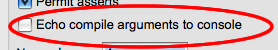

To modify how your X10DT operates, bring up the X10 preferences page.
On most platforms, Window > Preferences.
On Mac, Eclipse > Preferences.
Some of the preferences options are described below.
To see the x10 compiler arguments, check this option.

Then, each time you build, the compile options will appear in the Console view.